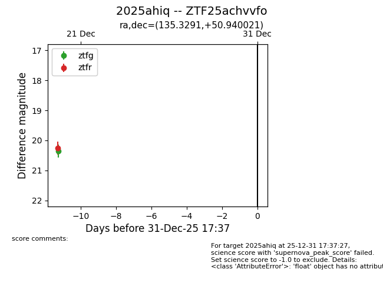
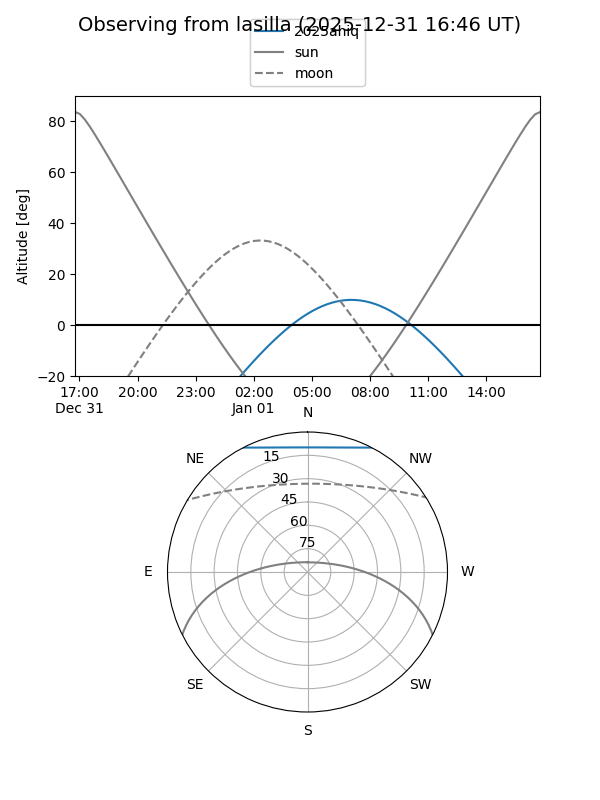
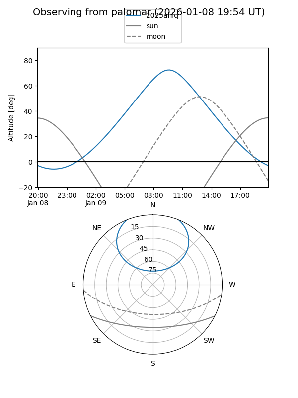

2025ahiq
Target 2025ahiq at 2025-12-20 13:44
Aliases and brokers:
FINK: fink-portal.org/ZTF25achvvfo
Lasair: lasair-ztf.lsst.ac.uk/objects/ZTF25achvvfo
ALeRCE: alerce.online/object/ZTF25achvvfo
TNS: wis-tns.org/object/2025ahiq
YSE: ziggy.ucolick.org/yse/transient_detail/2025ahiq
alt names
ZTF25achvvfo (ztf,fink_ztf)
2025ahiq (tns,yse)
Coordinates:
equatorial (ra, dec) = 135.3291,+50.94002
equatorial (HMS+DMS) = 09:01:18.98,+50:56:24.08
galactic (l, b) = (167.6541,+40.93012)
Flags:
Photometry:
last ztfg=20.35, ztfr=20.25
1 ztfg, 1 ztfr detections
Lightcurve

Visibility


Additional plots